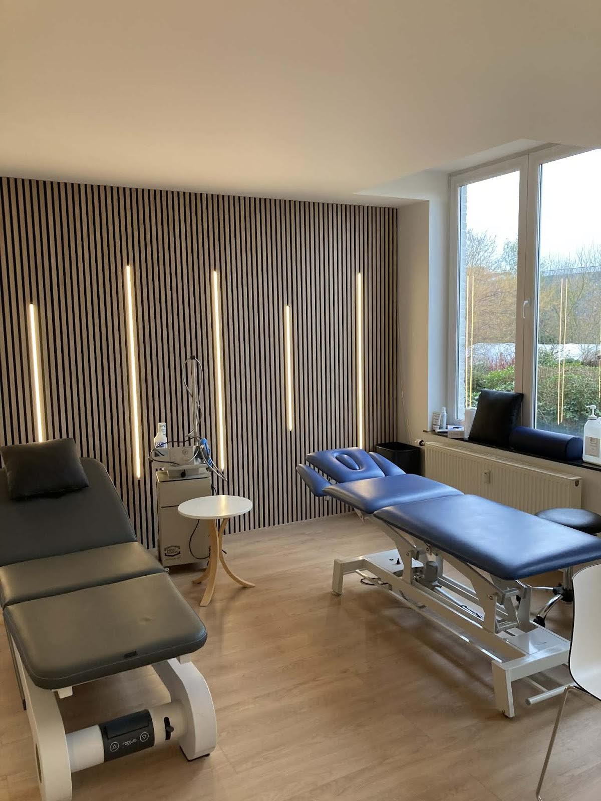

Kinésithérapeute du sport Namur
Kiné du sport, dès 7 h.
Nathan Baras, kinésithérapeute conventionné. Au cabinet Kiné Sport Namur, rue Henri Lecocq 12.

01 Le praticien
Deux masters à l’UCLouvain. Un cabinet à Namur.
Nathan Baras est kinésithérapeute du sport. Il consulte au cabinet Kiné Sport Namur et prend le temps de l’analyse avant de proposer des exercices, expliqués pas à pas.
-
2024
Master en kinésithérapie et réadaptation
-
2025
Master complémentaire en thérapie manuelle musculosquelettique et orthopédique
-
INAMI
Kinésithérapeute conventionné : les tarifs officiels de l’INAMI s’appliquent.
02 Les soins
Le sport d’abord. Pas seulement.
-
Kinésithérapie du sport
Rééducation après une blessure, renforcement, reprise progressive de l’activité. Des exercices expliqués, à refaire chez vous entre les séances.
-
Thérapie manuelle
Approche musculosquelettique et orthopédique, objet de son master complémentaire à l’UCLouvain.
-
Drainage lymphatique
Technique manuelle douce qui accompagne la circulation de la lymphe.
-
Kinésithérapie périnatale
Un accompagnement pendant la grossesse et après l’accouchement.
Au cabinet
Kiné Sport Namur est un cabinet partagé : plusieurs kinésithérapeutes et l’ostéopathie sous le même toit.
03 Horaires
Quatre matins dès 7 h. Le mercredi jusqu’à 20 h.
| Lundi | 07:00 – 12:30 |
|---|---|
| Mardi | 07:00 – 12:30 |
| Mercredi | 09:00 – 20:00 |
| Jeudi | 07:00 – 12:30 |
| Vendredi | 07:00 – 12:30 |
| Samedi | 08:00 – 12:30 |
| Dimanche | Fermé* |
* Toussaint : ces horaires peuvent varier.
Rendez-vous en ligne
Les créneaux de Nathan Baras sont réservables sur Doctoranytime.
Tarifs conventionnés
Kinésithérapeute conventionné : tarifs officiels de l’INAMI.
Cabinet partagé
Kinésithérapie et ostéopathie au même endroit, au cabinet Kiné Sport Namur.
05 Rendez-vous
En ligne, par téléphone ou par SMS.
Indiquez la raison de votre visite : sport, rééducation, drainage ou suivi périnatal.